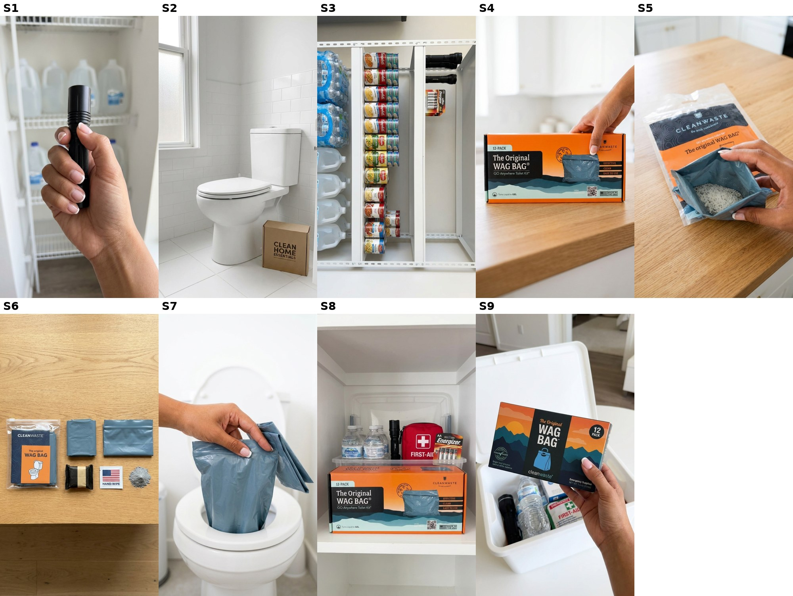

<title>Cleanwaste Ad Review</title>
<meta name="claude:viewport-fit-sides" content="cover">
<style>
/* Layout: one reading column, plan sections stacked; shot tables scroll on phones */
:root{--bg:#f6f7f8;--fg:#1d2328;--muted:#5d6a73;--line:#d8dee3;--accent:#e36a1f;--teal:#2c6e7f;--card:#ffffff;
--display:"Archivo",system-ui,sans-serif;--body:"Source Sans 3",system-ui,sans-serif}
@media (prefers-color-scheme:dark){:root:not([data-theme="light"]){--bg:#12171b;--fg:#e8ecef;--muted:#9aa8b1;--line:#2a343b;--accent:#f08a45;--teal:#5fb0c2;--card:#192026;color-scheme:dark}}
:root[data-theme="dark"]{--bg:#12171b;--fg:#e8ecef;--muted:#9aa8b1;--line:#2a343b;--accent:#f08a45;--teal:#5fb0c2;--card:#192026;color-scheme:dark}
body{background:var(--bg);color:var(--fg);font:16px/1.5 var(--body);padding-left:max(16px,env(safe-area-inset-left,0px));padding-right:max(16px,env(safe-area-inset-right,0px));padding-block:24px 48px}
main{max-width:880px;margin:0 auto;display:grid;gap:28px}
h1,h2{font-family:var(--display);text-wrap:balance;margin:0} h1{font-size:1.7rem} h2{font-size:1.2rem;border-bottom:2px solid var(--accent);padding-bottom:4px}
.eyebrow{text-transform:uppercase;letter-spacing:.08em;font-size:.78rem;color:var(--teal);font-weight:700}
.muted{color:var(--muted)} section{display:grid;gap:10px;min-width:0}
.two{display:grid;grid-template-columns:repeat(auto-fit,minmax(280px,1fr));gap:16px}
.card{background:var(--card);border:1px solid var(--line);border-radius:8px;padding:14px 16px;min-width:0}
ol{margin:0;padding-left:1.4em} li{margin:3px 0}
.wrap{overflow-x:auto;border:1px solid var(--line);border-radius:8px;background:var(--card)}
table{border-collapse:collapse;width:100%;min-width:720px;font-size:.92rem} td,th{border-bottom:1px solid var(--line);padding:8px;vertical-align:top;text-align:left}
th{font-family:var(--display);font-size:.8rem;text-transform:uppercase;letter-spacing:.05em;color:var(--muted)}
.pill{display:inline-block;padding:1px 8px;border-radius:99px;font-size:.75rem;font-weight:700;white-space:nowrap}
.pill.h{background:var(--accent);color:#fff} .pill.f{background:var(--teal);color:#fff}
.num{font-variant-numeric:tabular-nums;text-align:right} img{max-width:100%;border-radius:8px;border:1px solid var(--line)}
.total td{font-weight:700}
</style>
<link rel="stylesheet" href="https://fonts.googleapis.com/css2?family=Archivo:wght@600;800&family=Source+Sans+3:wght@400;600&display=swap">
<main>
<header><div class="eyebrow">Grace · Cleanwaste toilet kit · V1 · Round 1 stills · 2026-10-21</div><h1>Cleanwaste toilet kit ad</h1>
<p class="muted">V1 only, Grace's script word for word, short French tips with no rings, Kie only. These are still frames; no clip has been made yet.</p></header>
<section><h2>Storyboard, round 1</h2>
<div class="wrap"><table style="min-width:520px"><tr><th>Shot</th><th>Full-size check</th><th>Call</th></tr><tr><td>S1</td><td>Forearm shows (rule: hand and wrist only)</td><td><span class='pill h'>Redo</span></td></tr><tr><td>S2</td><td>A stray box with made-up print next to the toilet</td><td><span class='pill h'>Redo</span></td></tr><tr><td>S3</td><td>Real brand logos on cans and batteries</td><td><span class='pill h'>Redo</span></td></tr><tr><td>S4</td><td>Thumb covers part of &#x27;CLEANWASTE&#x27;; tiny print says &#x27;UEA&#x27;</td><td><span class='pill h'>Redo</span></td></tr><tr><td>S5</td><td>Bag opened, white powder inside, short French tips</td><td><span class='pill f'>OK</span></td></tr><tr><td>S6</td><td>Kit contents laid out: bag, zip bag, toilet paper, wipe</td><td><span class='pill f'>OK</span></td></tr><tr><td>S7</td><td>Bag looks like a small zip pouch, not the big bag draped over the seat</td><td><span class='pill h'>Redo</span></td></tr><tr><td>S8</td><td>Energizer logo on batteries</td><td><span class='pill h'>Redo</span></td></tr><tr><td>S9</td><td>Wrong box: the old blue Wag Bag design</td><td><span class='pill h'>Redo</span></td></tr></table></div>
<p class="muted">The prompts are already fixed for every redo: hand cut at the wrist, nothing branded except Cleanwaste, an empty floor, the real bag-on-seat photo as a reference, and the old box design named as wrong.</p></section>
<section><h2>Script, word for word (grade 5.2)</h2><div class="card"><ol><li>You prepared for the power to go out but did you prepare for the toilet to stop working</li><li>Most people stock up on water food and flashlights but forget about the bathroom</li><li>That&#x27;s where these Cleanwaste toilet kits come in</li><li>Each kit has a waste bag with powder that gels liquid and helps control odor</li><li>You also get toilet paper a hand wipe and a zip close disposal bag</li><li>You can even use it with a regular toilet that won&#x27;t flush</li><li>It&#x27;s one less thing to figure out during an emergency</li><li>Add these to your emergency supplies</li></ol></div></section>
<section><h2>Cost, Kie only</h2><div class="wrap"><table style="min-width:420px"><tr><th>Item</th><th class="num">Qty × unit</th><th class="num">$</th></tr>
<tr><td>Stills round 1 (spent)</td><td class="num">9 × 0.09</td><td class="num">0.81</td></tr>
<tr><td>Still redos S1 S2 S3 S4 S7 S8 S9</td><td class="num">7 × 0.09</td><td class="num">0.63</td></tr>
<tr><td>Clips, Seedance 2.0 Mini on Kie, 5 s (riskiest first: S4 box in hand)</td><td class="num">9 × 0.205</td><td class="num">1.845</td></tr>
<tr class="total"><td>New total</td><td></td><td class="num">3.285</td></tr></table></div>
<p class="muted">The earlier V1 quote was $2.04 on Kie plus Kling credits. With Kie only, the 4 hand-free clips move to Seedance, and the redos add $0.63. The voiceover is ~480 ElevenLabs characters.</p></section>
<section><h2>Shots</h2><div class="wrap"><table><tr><th>#</th><th>Words</th><th>Type</th><th>Shot</th></tr><tr><td>S1</td><td><q>You prepared for the power to go out</q></td><td><span class='pill h'>HAND</span></td><td>Close-up in a bright hallway: a hand holds a small black LED flashlight pointed slightly down, thumb on its button; behind it, softly out of focus, a white wire shelf with gallon water jugs. The flashlight is off.<br><em>Motion:</em> The thumb presses the button once and the flashlight turns on (a soft white beam); the hand tilts it a few degrees. Slow push-in. The room stays fully bright.</td></tr>
<tr><td>S2</td><td><q>but did you prepare for the toilet to stop working</q></td><td><span class='pill f'>HAND-FREE</span></td><td>A clean white toilet with the lid closed in a bright white bathroom with white subway tile and a frosted daylight window, seen from standing height a little to the side. The floor around the toilet is completely empty: no boxes, no bins, no objects anywhere.<br><em>Motion:</em> Only the camera moves: a slow smooth dolly-in toward the closed toilet. Nothing in the room moves.</td></tr>
<tr><td>S3</td><td><q>Most people stock up on water food and flashlights but forget about the bathroom</q></td><td><span class='pill f'>HAND-FREE</span></td><td>A white garage storage shelf at eye level: on the left bottled water and gallon jugs, in the middle canned food, on the right two black flashlights and a pack of batteries, then an empty bare section of shelf at the far right. Bright daylight.<br><em>Motion:</em> Only the camera moves: a slow sideways tracking move from left to right along the shelf, past the water, the canned food and the flashlights, ending on the empty bare section. Nothing on the shelf moves and no hand appears.</td></tr>
<tr><td>S4</td><td><q>That&#x27;s where these Cleanwaste toilet kits come in</q></td><td><span class='pill h'>HAND</span></td><td>On a light oak kitchen counter, the box stands upright on its long edge facing the camera straight on; one hand holds its right END: fingers wrapped around the right end panel, thumb resting on the very right edge of the front, never covering any of the print. White kitchen behind, softly out of focus.<br><em>Motion:</em> The hand slides the box a few centimetres toward the camera and holds it steady facing the lens; it never turns or tilts more than a few degrees. Slow push-in.</td></tr>
<tr><td>S5</td><td><q>Each kit has a waste bag with powder that gels liquid and helps control odor</q></td><td><span class='pill h'>HAND</span></td><td>Close-up on a light oak counter: an opened clear kit pouch lies flat; one hand holds the blue-grey waste bag by its top edge, the bag&#x27;s mouth slightly open toward the camera so a small heap of white granular powder is visible at the bottom inside the bag.<br><em>Motion:</em> The hand tips the open bag a little toward the lens so the white powder inside slides gently along the bottom of the bag; the bag stays empty apart from the powder, nothing spills out.</td></tr>
<tr><td>S6</td><td><q>You also get toilet paper a hand wipe and a zip close disposal bag</q></td><td><span class='pill f'>HAND-FREE</span></td><td>Top-down view of a light oak counter: the kit contents laid out in a neat row.<br><em>Motion:</em> Only the camera moves: a slow smooth push-in from above. Nothing on the counter moves.</td></tr>
<tr><td>S7</td><td><q>You can even use it with a regular toilet that won&#x27;t flush</q></td><td><span class='pill h'>HAND</span></td><td>Bright white bathroom, white toilet with the lid up and the seat down, seen from standing height. Two hands at the bottom edge of the frame hold open a large, thin, slack blue-grey plastic bag (about the size of a kitchen trash bag, opened wide) and drape its rim over the toilet seat so the empty bag hangs down into the bowl, like reference image 2.<br><em>Motion:</em> The hands fold the bag&#x27;s rim neatly around the seat, smooth it once, and let go; the empty bag stays draped in the bowl. The toilet stays still.</td></tr>
<tr><td>S8</td><td><q>It&#x27;s one less thing to figure out during an emergency</q></td><td><span class='pill f'>HAND-FREE</span></td><td>A white hall-closet shelf with an open clear plastic storage bin of emergency supplies: bottled water, a flashlight, a red first-aid pouch, batteries, and the orange Cleanwaste box standing at the front of the bin. Bright daylight.<br><em>Motion:</em> Only the camera moves: a slow smooth dolly-in toward the bin. Nothing moves and no hand appears.</td></tr>
<tr><td>S9</td><td><q>Add these to your emergency supplies</q></td><td><span class='pill h'>HAND</span></td><td>A white hall-closet shelf with an open clear plastic bin of emergency supplies (plain water bottles, a flashlight, a red first-aid pouch); one hand holds the right END of the box (fingers around the end panel, thumb on the right edge, print uncovered), holding it just above the open bin, print facing the camera.<br><em>Motion:</em> The hand lowers the box into the bin so it stands at the front, print facing the camera, then the hand leaves the frame. Slow push-in.</td></tr></table></div></section>
</main>